Socratic
“Got Discourse? Discuss!”
Socratic is an online platform for discussing current events with people of different opinions. It exposes you to different perspectives of the same event and promotes thoughtful and non-hostile conversation.
PROBLEM
During Fall 2017 I took CS160 (User Interface Design and Development) taught by John Tang where we explored the theme of “Bursting Echo Chambers in Social Media”. We were tasked with designing a webapp to address this topic, following a human-centered process.
THE TEAM
Our team of four consisted of two developers (Genji and Gemma), a designer (Takara), and me (a bit of both!). Takara and I spearheaded the design aspect of the project, from interviewing people to wireframing and visual aesthetics. When it came to prototyping with code, Genji and Gemma worked on the backend while I worked on the front end components.
NEEDFINDING
We started our user research by attending two events where people expressed a diversity of opinions:
Event 1: MENA Salon: Free Speech and Exclusion on American Campuses
Center for Middle Eastern Studies hosts an informal weekly coffee hour and guided discussion of current events in the Middle East and North Africa.
Here's a sketch of the event:
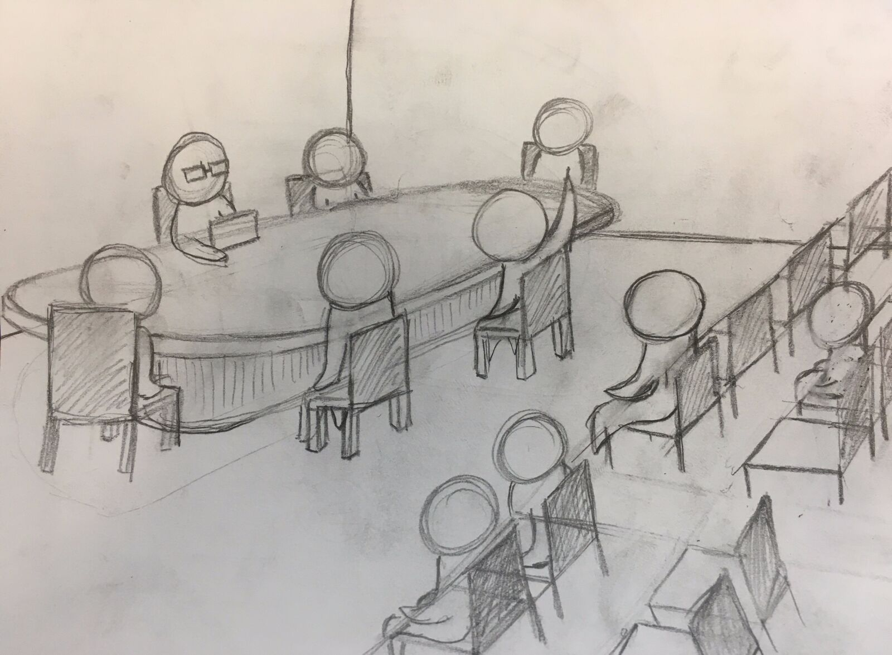
After the event, we interviewed a couple people, following this discussion guide:
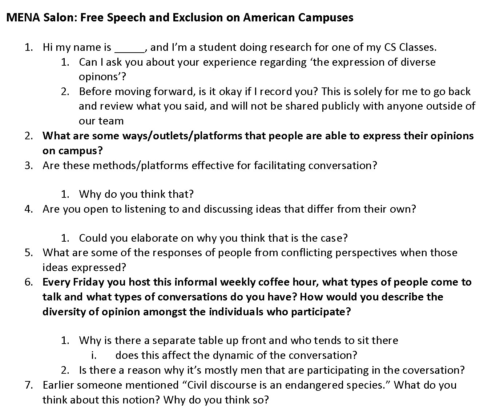
Here were a couple interpretations we made after observing the event and also interviewing participants:
- Conversation can be directed by a source of authority
- Conversation can be smooth and efficient when there is a set of rules people know about and follow
- Wording is important when talking about a topic. Words that signify statements as subjective opinions allow thoughts to be challenged or even supportive
- Discussion can be richer when people understand what’s being said and share the same factual knowledge as the ones speaking
- People are more likely to talk and listen to/with other people that are like-minded
- People are more likely to listen if you listen to them, even if their opinion differs from yours
- It’s hard to have/find open conversation with people who don’t share the same perspective
- Conversation can be smooth and efficient when there is a set of rules people know about and follow
- Wording is important when talking about a topic. Words that signify statements as subjective opinions allow thoughts to be challenged or even supportive
- Discussion can be richer when people understand what’s being said and share the same factual knowledge as the ones speaking
- People are more likely to talk and listen to/with other people that are like-minded
- People are more likely to listen if you listen to them, even if their opinion differs from yours
- It’s hard to have/find open conversation with people who don’t share the same perspective
Event 2: White Supremacy, Gender, and Speech in the wake of Charlottesville
This event was panel of four speakers, speaking on perspectives on White Supremacy, Gender, and Free Speech.
Here’s a sketch of the event:
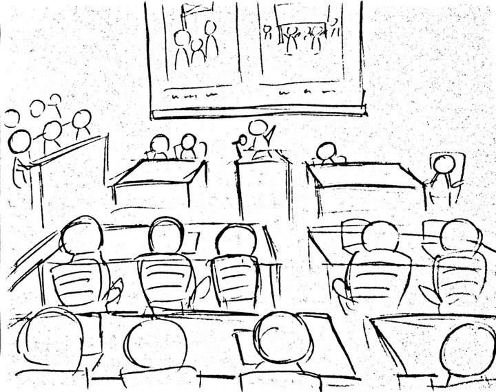
We got the chance to interview two law student who attended the panel after the event, this time being more brief because it seemed like people were on their way out:
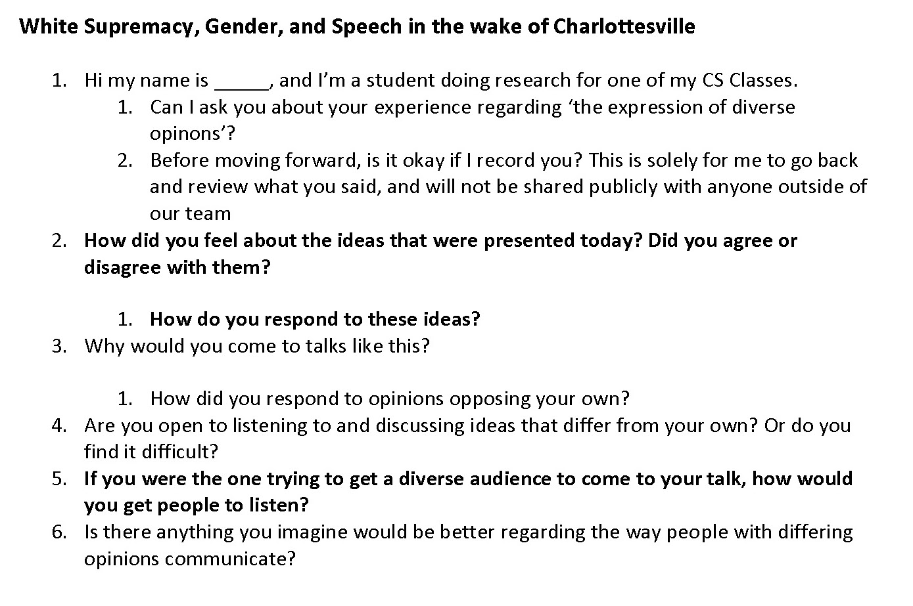
Here were some takeaways from our interviews:
- Conversations, especially about controversial topics, requires mutual trust and respect for one another in order to be effective
- Relevant topics are a strong motivator for people to attend talks, even ones with opposing views
- People groups generally will not tolerate opinions that put down their humanity
- The viewpoints of these talks should be presented with honesty and tranparency
- Relevant topics are a strong motivator for people to attend talks, even ones with opposing views
- People groups generally will not tolerate opinions that put down their humanity
- The viewpoints of these talks should be presented with honesty and tranparency
POV + HMW
From there we did some affinity mapping and grouped our insights to help us organize our data and narrow the design space.
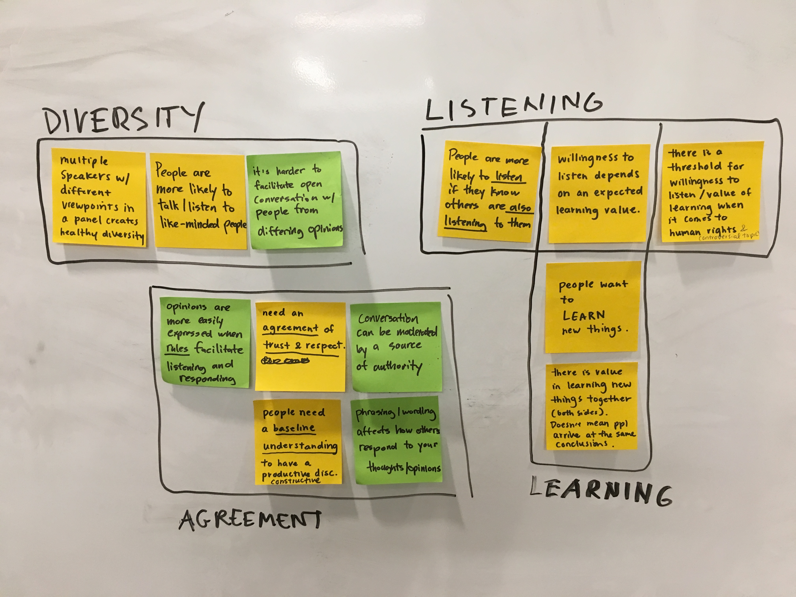
After, we created some Point of View and How Might We statements to guide our ideation phase:
Point of View
1. We met a group of older men who regularly discuss current events involving the Middle East and North America. We were amazed to learn that they were willing to listen and converse with people with perspectives different from theirs, but that there wasn’t really anyone from a radically different background. It would be game-changing if we could get people from drastically different backgrounds and opinions to participate in their discussions.
2. We met two open minded law students who are passionate about what they believe, but still attend talks that they do not agree with. We were amazed to learn that their main reason for going to the events was learning value, regardless of whether the information was in support of their existing belief or not. They did not expect their opinion to be changed, learning information from the other side does not necessitate arriving with their conclusion. It would be game-changing if we could focus our goals to learning, rather than argument and persuasion.
2. We met two open minded law students who are passionate about what they believe, but still attend talks that they do not agree with. We were amazed to learn that their main reason for going to the events was learning value, regardless of whether the information was in support of their existing belief or not. They did not expect their opinion to be changed, learning information from the other side does not necessitate arriving with their conclusion. It would be game-changing if we could focus our goals to learning, rather than argument and persuasion.
How Might We
1. How might we facilitate a space for learning rather than trying to persuade and conquer?
2. How might we establish decorum and a baseline understanding of factual information to hold a constructive discussion?
2. How might we establish decorum and a baseline understanding of factual information to hold a constructive discussion?
IDEATION
Based off of our research, we brainstormed 5 possible design solutions to our problem and picked one to try out:
1. Chat rooms categorized by topics
2. Dedicated sites for college students to pick speakers
3. A microphone where people can only speak when they have it, else they have to listen
4. An online board where post opinions and respond to other people’s opinions
5. A feed that shows you posts that are the opposite of what you would want
2. Dedicated sites for college students to pick speakers
3. A microphone where people can only speak when they have it, else they have to listen
4. An online board where post opinions and respond to other people’s opinions
5. A feed that shows you posts that are the opposite of what you would want
PROTOYPE
We decided to expand on idea 4 and created a working prototype using meteor and handlebars going off the following general user flow:

The first screen shows a list of people’s submitted opinions, along with a brief description expanding upon the title.
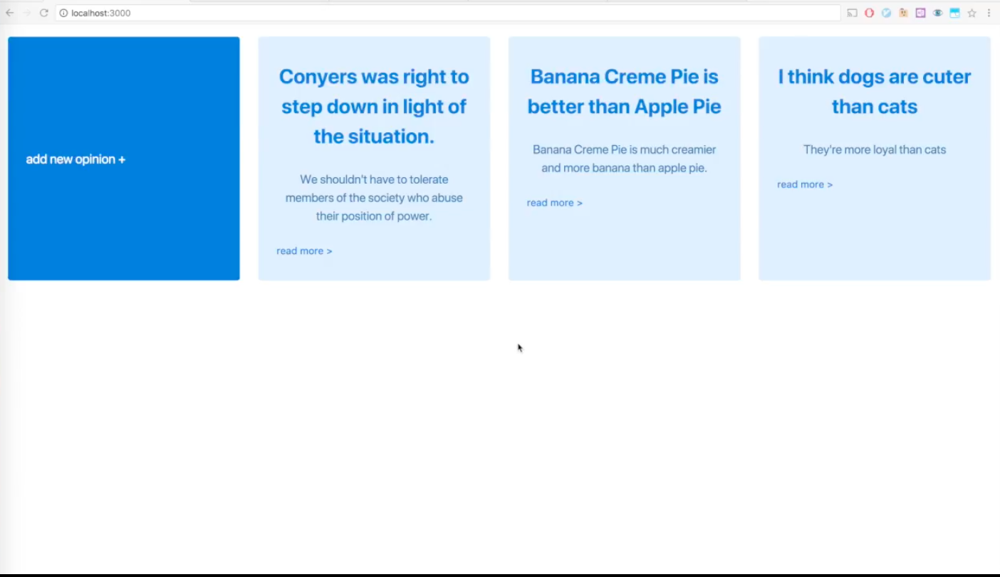
Clicking on “add new opinion” takes you to a page where you can input information for a new post.
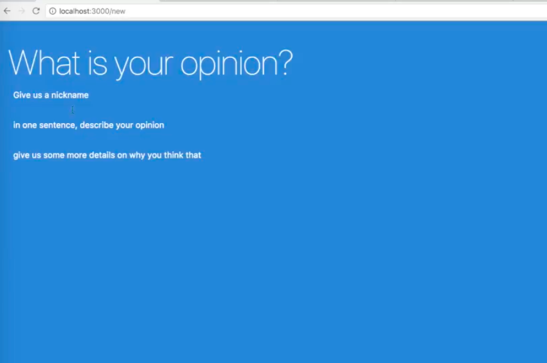
Clicking any of the opinion cards reveals a comment thread where you can discuss the opinion with other users.
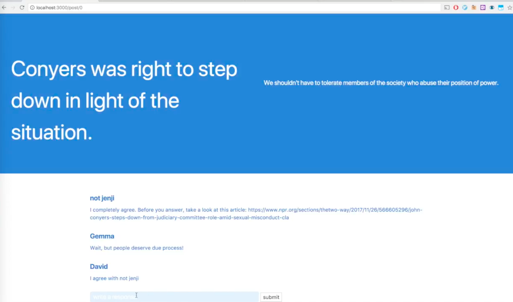
USER TESTING
We user tested with 5 different people, having them go through the following core user task while talking out loud:
Participate in a conversation with someone under someone else’s post and gain new knowledge from the exchange. (the replies from other users will be simulated on our end so the user can reply).
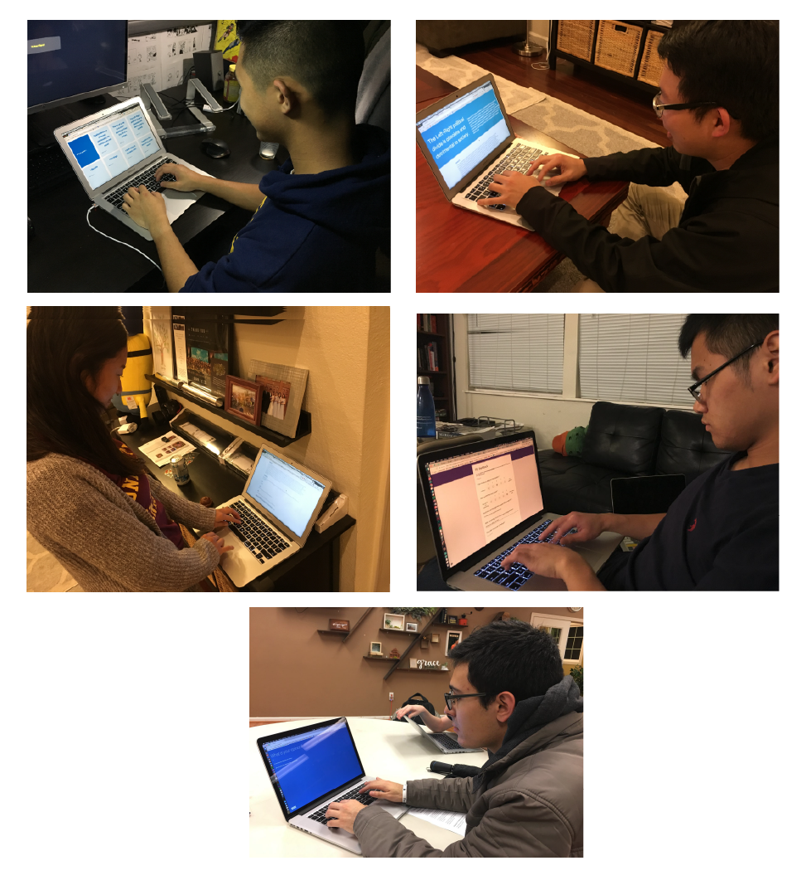
After completing the task, we asked users to give us feedback via this google form, and gave them time to fill it out.
We received a lot of feedback and found many places to improve the product from the tests we conducted:
- Difficult navigation
- Core user task and what people found the site was meant for was unclear
- "Give us a nickname" prompt when adding a new opinion was confusing
- Might be helpful to have a name of the website
- Put a username attributed to the opinion otherwise they just think it’s a topic not someone's opinion
- People found unclear: What are the comments? What are people trying to do in the comments? What standpoints are they coming from?
- How to display an ongoing conversation
- The comment section doesn't look like a comment section
- Core user task and what people found the site was meant for was unclear
- "Give us a nickname" prompt when adding a new opinion was confusing
- Might be helpful to have a name of the website
- Put a username attributed to the opinion otherwise they just think it’s a topic not someone's opinion
- People found unclear: What are the comments? What are people trying to do in the comments? What standpoints are they coming from?
- How to display an ongoing conversation
- The comment section doesn't look like a comment section
Most of the problems that came up from the prototype simply came from the fact that we didn’t have the time to create a fully fleshed-out app.This was okay since we were mainly interested in testing our concept. The conceptual aspect is where we received the most valuable feedback:
- The concept in general seems very boring to users
- Most users said they would not want to use this app
- Discussion with intent to learn from others isn’t encouraged by the current interface
- Most users said they would not want to use this app
- Discussion with intent to learn from others isn’t encouraged by the current interface
ITERATE
With the feedback we received, we decided to improve our app with the following goals:
- Engage users with more directed content in order to focus conversation
- Encourage discussion on important topics from people of different backgrounds
- Encourage discussion on important topics from people of different backgrounds
Steps to take:
- Guide discussion with prompts and discussion questions
- Include articles on current events from different parts of the political spectrum
- Include articles on current events from different parts of the political spectrum
Socratic 2.0
We wanted to make the following changes
- An opinion related to current events
- two comment threads that separates those who agree and those who disagree
• We decided to only allow one opinion so that all traffic is funneled to that one discussion for people to participate
• The opinion would change every week
- 3 articles related to the event for users to read • The opinion would change every week
• Each article would come from a different part of the political spectrum (inspired by allsides)
- Buttons to indicate whether or not you agree or disagree with the stated opinion - two comment threads that separates those who agree and those who disagree
• Replies would be color-coded to indicate whether or not you agree with the opinion
• The comment area would not be visible until you indicated your position
- Comments with the most points rise to the top
• The comment area would not be visible until you indicated your position
• The catch is you can only upvote comments made by those who disagree with your perspective
• You cannot see the score of comments by those who agree with you
• You cannot see the score of comments by those who agree with you
We created a quick sketch before moving on to high-fidelity screens
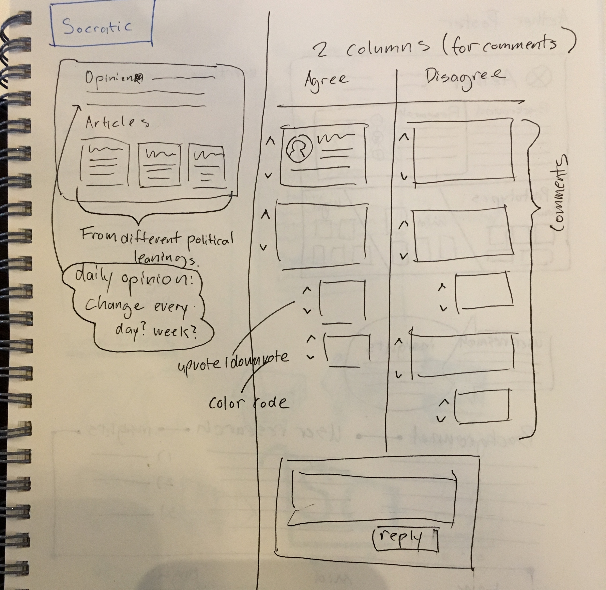
FINAL DESIGN
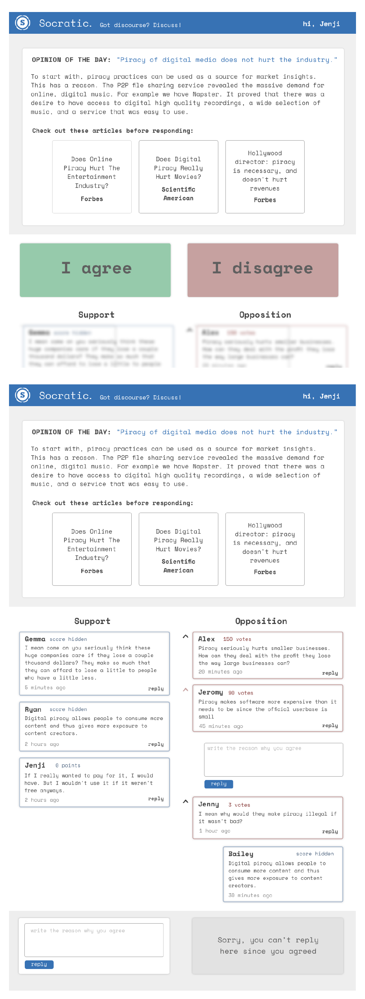
DEMO
We created a hi-fi prototype and demo video to present our project to the class:
Feel free to check out the github repo:
http://bit.ly/2CvU21P
http://bit.ly/2CvU21P
IF WE HAD MORE TIME
If we could iterate on this project one more time, we would:
- Create a page to view previous discussions/opinions
- Create a way to make sure users read all three articles before clicking “agree” or “disagree”
- Add a “Neutral” button option
- Create a way to make sure users read all three articles before clicking “agree” or “disagree”
- Add a “Neutral” button option
• Opinions aren’t so black and white!
- Create user profile functionality
• Make it optional so users don’t have to commit to an account to participate
TAKEAWAYS
User testing is super super super valuable
- We found so many ways to improve our with just a couple people going through our prototype
- Users ran into many issues we never would’ve found ourselves
- Users ran into many issues we never would’ve found ourselves
Code takes time, keep that in mind
- It takes much longer to build something that works with a JavaScript framework than it does creating something pretty with Sketch and Illustrator
- This may seem obvious, being conscious of that will help you keep up with the project timeline and will spare you all-nighters fixing bugs
- This may seem obvious, being conscious of that will help you keep up with the project timeline and will spare you all-nighters fixing bugs
The final product can look very different from your initial solution